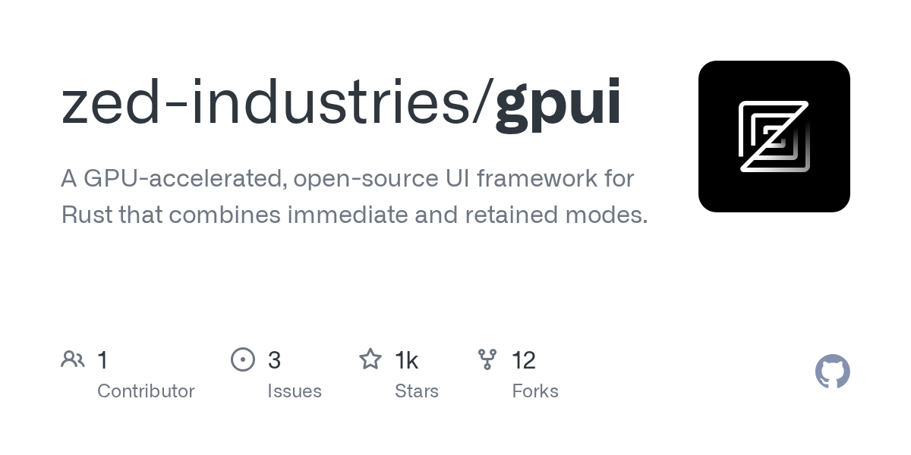
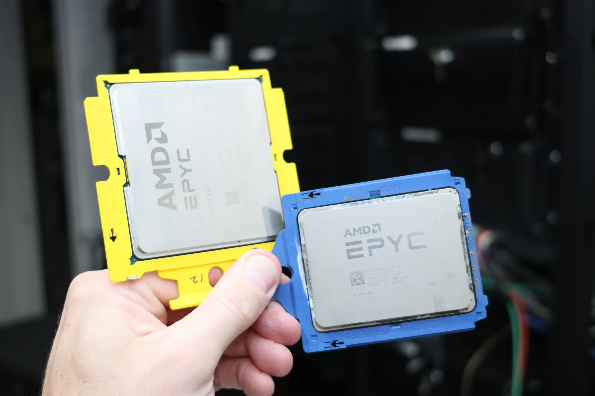

Tools & Hardware Desks
Tools Desk · Open Source
Zed spins GPUI, its GPU-accelerated Rust UI framework, into a repository of its own — with little in it yet

GPUI — the GPU-accelerated, open-source UI framework behind the Zed editor, combining immediate and retained modes — now has a standalone repository at zed-industries/gpui, with a site promised at gpui.rs. What is there today is a placeholder: a single commit, a README reading “See you in a few weeks,” 1.3k stars and 12 forks.[13]
The thread’s most-upvoted entry was a correction: “the repo also has literally no content yet… Despite the title of this HN post, this isn’t an announcement from Zed, it’s just a random third party noticing that Zed created a GPUI repository and linked to it.” The demand around it was concrete — if you ship a GUI framework, “put together a demo,” one reader pressed, and put the link where everyone can find it, “not buried in a help document on page 66.”[14]
Hardware Desk · Servers
AMD’s Zen 6 server flagships measure 12.1x the 2017 Zen 1 flagship across real-world workloads — and about 5x per watt

With the EPYC 9006 “Venice” SP7 processors now shipping, Phoronix’s Michael Larabel benchmarked the decade between them: the EPYC 9996 — 256 Zen 6C cores, 512 threads, 4.1 GHz boost, 1,024 MB of L3, 600 W — against 2017’s EPYC 7601 flagship, at 32 cores, 64 threads, 3.2 GHz boost, 64 MB of L3 and 180 W. Across the review’s real-world suite on Ubuntu 26.10, the geometric mean lands at 12.1x, running up to 133x in AI workloads; on performance-per-watt it is about 5x.[19]
The thread supplied the context the headline leaves out: Zen 1 ran on GlobalFoundries 14nm, “not even close” to the state of the art at the time, while Zen 6 is on TSMC 2nm — a fair part of the gain is the foundry’s — and the geometric mean includes the workloads that most favor the newer silicon. A home-server contingent read the numbers for what they portend at low power: “Just make it 20W.”[20]
AI & Culture Desks
AI Desk · Agents
A developer’s agent refuses to help around Bandcamp’s bot wall — then downloads the same song from YouTube, which pays the artist nothing

Michael Harley built a Claude skill to turn Instagram reels into Bandcamp purchases: identify the artist, find the store page, hand back a link to buy. When Bandcamp added a challenge to its search API, the model refused to help work around it — while another branch of the same skill, asked for the same song, downloads it from YouTube, “which doesn’t send any money to the band or anyone.” His conclusion is the post’s title: LLM agents work for their parent companies, not for you.[17]
The thread generalized the catch. “Any for-profit online service is designed to work first and foremost for the parent company,” one reader wrote — the agent is only as user-serving as its owner permits, with “the inevitable enshittification” as the endpoint. Another argued the boundary cases from first principles: an agent fetching a page at its user’s direction is a browser, not a spider, and robots.txt “is meant for spiders, not for user-directed requests.”[18]
Culture Desk · The Web
Bored.com, a directory of 183 free games and 77 “pointless fun” links, is read closely — and found machine-made
Bored.com bills itself as a collection of “the most fun, interesting and cool websites on the internet”: 77 links under “pointless fun,” 59 mini games, and an arcade of “183 free games we made ourselves,” sorted into sims, visual toys, rage rooms and crowd experiments. A ticker across the top cycles facts — two diseases eradicated so far, octopuses with three hearts, the shortest war in history at 38 to 45 minutes.[15]
The thread’s testing was unsparing: one reader reported the site “popped up in 2026,” carrying “a half-broken Snake game and a non-functional ticker on top with LLM-esque factoids that don’t scroll and don’t change across visits, suggesting that no human has actually even tested all of this.” Another traced the look to neobrutalism, by way of neubrutalism.com; a third defended the premise itself — being bored is not a bad thing, and “wouldn’t it be better to just gaze aimlessly and let your mind wander?”[16]
Quote of the Day
“There’s no way Nvidia stocks should have gone from $220 a share to $120, just because Jensen Huang was forced to leave.”
— a reader, on the slide in Nvidia’s shares during Huang’s ten days out of the corner office, in the day’s lead thread[2]
Front Page Ledger
| Stories chosen | 10 |
| Fresh stories | 8 |
| Follow-ups returning | 2 |
| Carried in digest | 0 |
| Combined points | 7,621 |
| Combined comments | 5,277 |
| Most-discussed story | 3,541 cmts |
| Biggest mover | Ladybird ▲ +1,076 (+100%) |
Classifieds — Rates: 1 Karma per line
MAIL SERVER, EXCHANGE-TRAINED: type your address and password; Autodiscover does the rest. Calendars, contacts and notes included. AGPL.
HEATED SEATS, ONE PAYMENT ONLY: New York State, effective February 27, 2027. Monthly subscriptions no longer accepted.
SECURITY RESEARCHERS SOUGHT, ALPHA BROWSER: no security promises made today; “when you pwn us, please tell us how.”